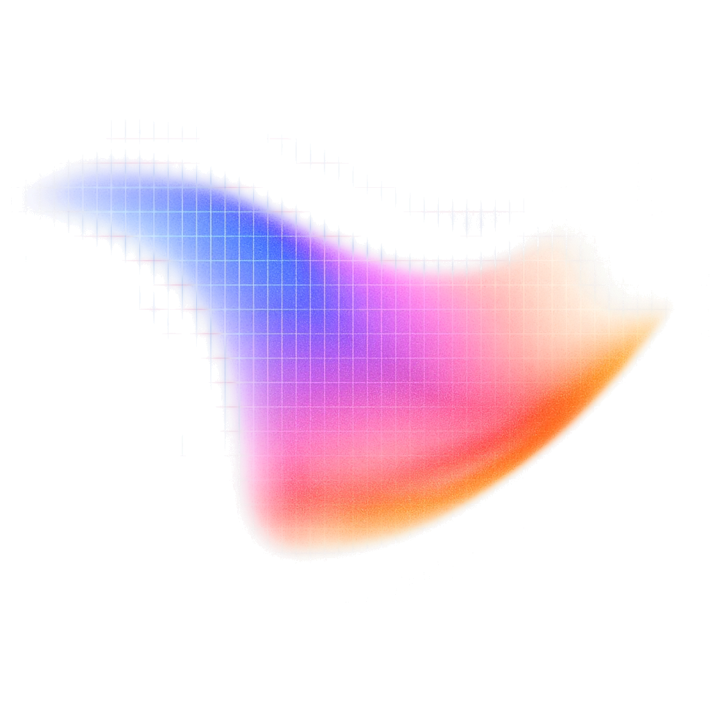
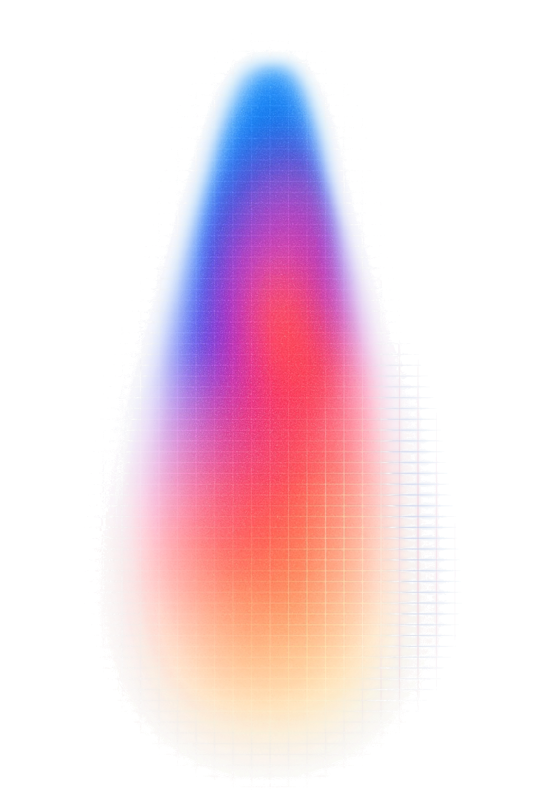
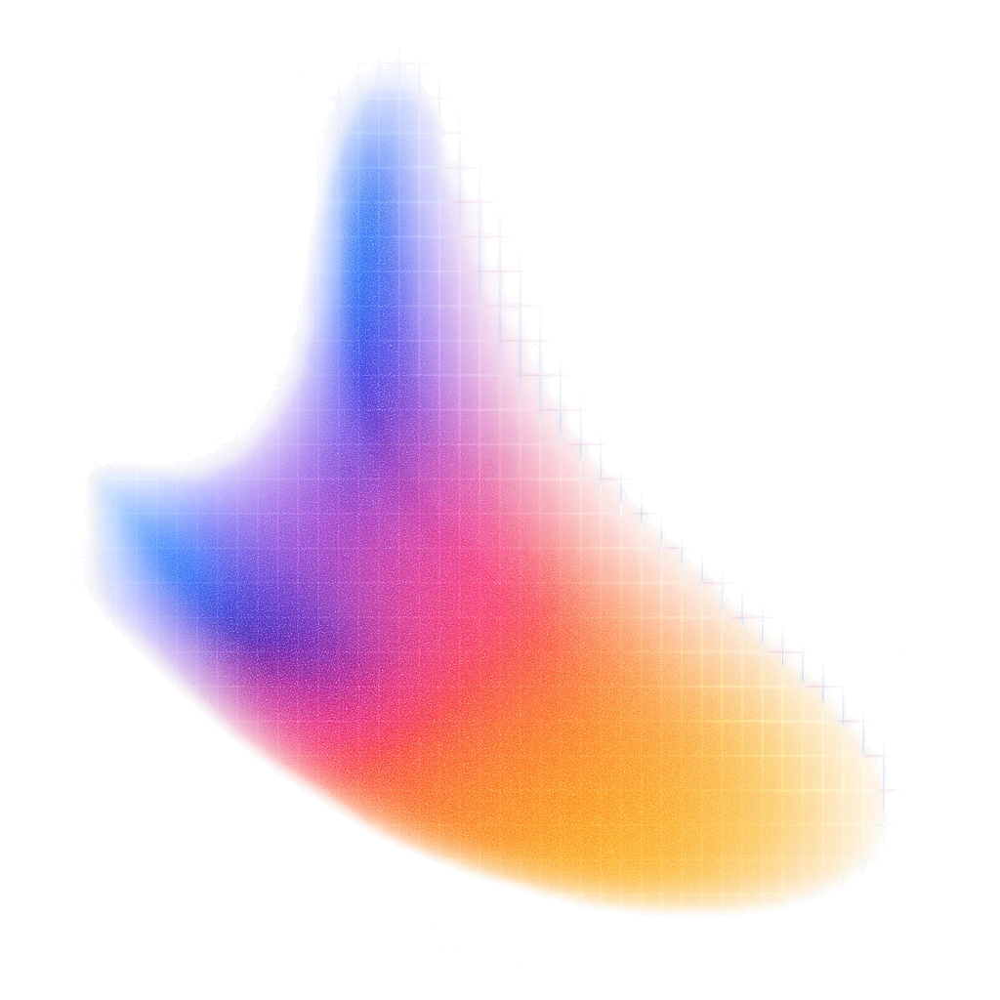
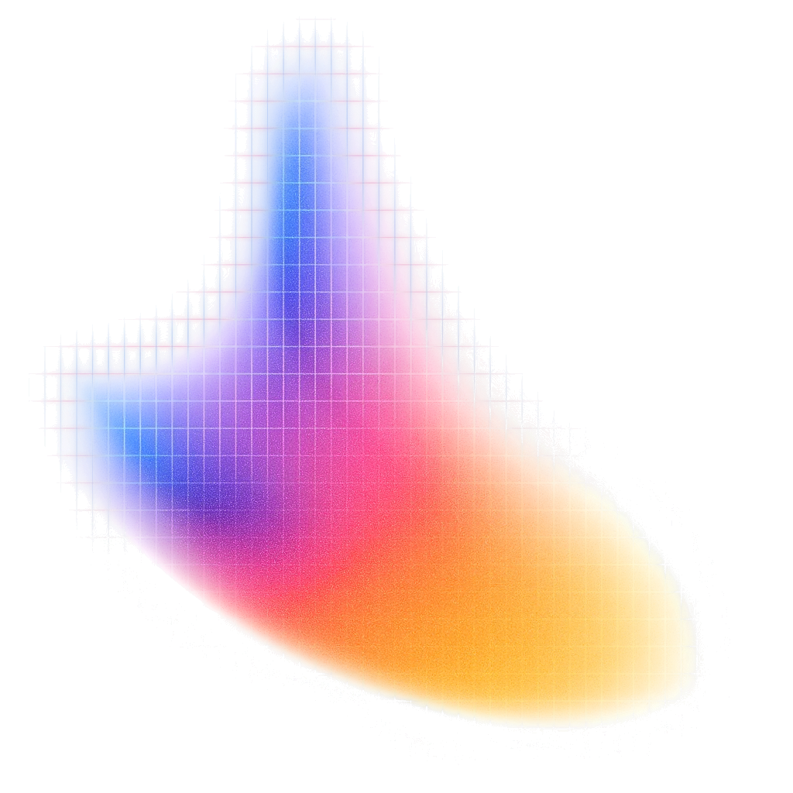

Week 1
Advanced AI for Business
woensdag 10:30
Blok 1 · Jij
Alexander Gabriel Coenegrachts
Product engineer
Tien jaar in tech.
Artevelde, dan master Data Management.
GABI: bedrijven helpen agents bouwen.
Blok 1 · Jij
>_Terminal · T1
Mijn agents draaien nu.

Stelling 1
Er is meer dan het chatvenster.

Stelling 2
Vandaag leer je git.
Met je AI.
In een uur.
Blok 2 · Zij
Drie minuten met je buur:
coolste wat je al met AI gedaan hebt.
Daarna: elk één zin over je buur.
3:00
Blok 2 · Zij
Handen omhoog.
01Wekelijks AI?
02Dagelijks?
03Ooit betaald?
04Ooit iets anders dan een chatvenster?
05Ooit git?
06Ooit gevibecodet?
Blok 3 · Opzet
Setup: hoe gaan we 13 weken lang AI gebruiken
Blok 3 · Opzet
We leren over AI, door het praktisch te gebruiken doorheen de les.
Blok 3 · Opzet
Een coding agent is geen chatvenster.
Een chatvenster geeft tekst terug. Een coding agent doet dingen: leest je bestanden, schrijft ze, voert commando's uit, kijkt of het werkte, en probeert opnieuw.
Claude Code of Codex.
Zelfde model als in je browser.
Andere handen.
Blok 3 · Opzet
Waarom niet Cowork, Projects of een GPT?
Die blijven in de doos van de leverancier. Jouw werk staat daar, in hun formaat, in hun geheugen.
Hier is alles een bestand. Bestanden staan in git. Git staat op GitHub. Wat je bouwt, is van jou en blijft van jou, welk model je ook kiest.
Drie dingen die alleen zo lukken
1Je agent draait je testset zelf.
2Je werk staat publiek met je naam erop.
3De skills in deze repo werken in elke tool.
Blok 3 · Opzet
>_Terminal · T3
Stap 0: de tool. Stap 1: één regel.
Je betaalt voor
Je installeert
ChatGPT
Codexnpm install -g @openai/codex
Claude
Claude Codecurl -fsSL https://claude.ai/install.sh | bash
Windows: irm https://claude.ai/install.ps1 | iex
Dan open je die tool en plak je dit:
Lees https://raw.githubusercontent.com/alexandernacho/advanced-ai-nl/main/.claude/skills/opzet/SKILL.md en volg de stappen met mij. Eén stap per keer, in het Nederlands.
Blok 3 · Opzet
Regels tijdens de opzet.
Duo's.
Klaar? Help je buur.
Eerst je AI,
dan je buur,
dan ik.
Om 12:20 stoppen we, waar je ook staat.
Blok 4 · Het vak
Waar staan we?
Handen: wie heeft
1een fork?
2Een clone?
3Een map?

Blok 4 · Het vak
De wereld is veranderd.
Werken is veranderd.
Dertien weken, één vraag, elke week een andere hoek.
Blok 4 · Het vak
Je bouwt één ding.
Klein of groot.
Voor een echte taak.
Je meet het, twaalf weken lang.
Voorbeeld
[Jouw tool]
[getal]
Blok 4 · Het vak
>_Terminal · T2
Je publiceert elke week.
Publiek.
Met je naam.
studenten/_voorbeeld/posts/week-01.md
Blok 4 · Het vak
Hoe je beoordeeld wordt.
Onderdeel
Gewicht
Weken
Capstone-memo
40%
W12, W13
Wekelijkse post (building journal)
15%
W4, W8, W11
De Build (AI Tool)
15%
W4, W8, W12
Verdediging
10%
W13
Twee pitches
10%
W7, W11
Portfolio en bijdrage
10%
W4, W8, W12
Blok 4 · Het vak
Alles op bewijs. Nooit op "het werkt".
60%
goed gemeten
scoort hoger
95%
geclaimd
Een tool die 60% haalt en goed gemeten is, scoort hoger dan een die 95% claimt.
Blok 4 · Het vak
Elke week hetzelfde ritme.
Blok 4 · Het vak
>_Terminal · T4
context.md
wat het model over jou moet weten.
Blok 5 · Richting en post
Waarvoor ga jij dit gebruiken?
Je job
Je zaterdagjob
Je vereniging
Eén zin. Geen case, alleen een richting.
Blok 5 · Richting en post
>_Terminal · T5
Eerste post.
Drie vragen, halve pagina.Pull request tegen vrijdag.
1Wat heb ik tot nu toe met AI gedaan?
2Wat verraste me vandaag?
3Welke richting wil ik uit?
Blok 5 · Richting en post
Tegen woensdag 30 september
01Opzet af
02Post + pull request
03Lees de Build-brief met je AI en breng drie ideeën mee.